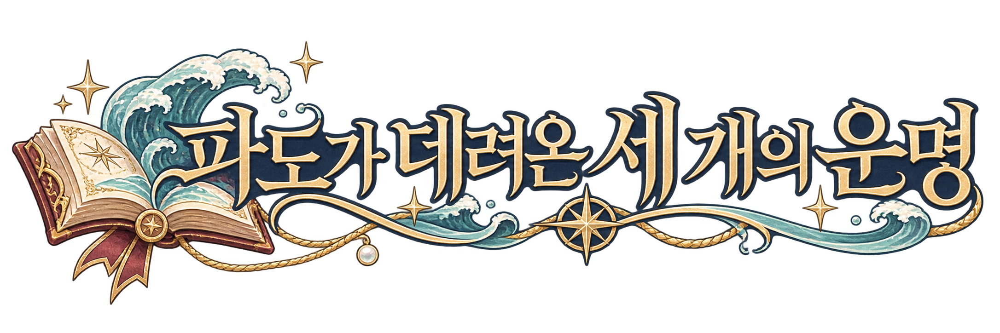
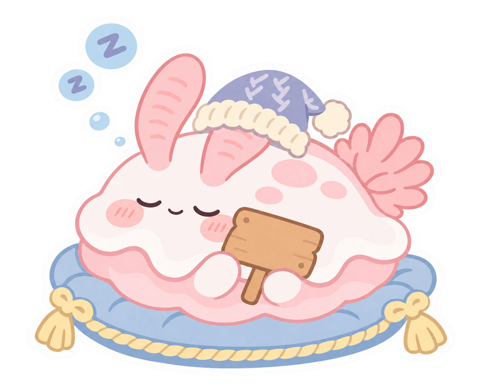

파도가 데려온 세 개의 운명'">
🎵
🌙
KO
파도가 데려온 세 개의 운명
벨카르드의 이방인 원작 · 전 5화 초단편
표지를 눌러 책을 펼쳐 보세요.
←
목록
🎵
Aa
글자 크기
가-
가+
줄 간격
좁게
넓게
글꼴
명조
고딕
화면
🌙/☀️
확인

잠시 쉬어갑니다 💤
다음 화에서 만나요.
확인
♪ BGM
✕
0:00
0:00
⏮
▶
⏭
🔊
🎵 화면을 한 번 누르면 BGM이 시작돼요